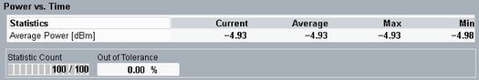

Statistical Power vs Time Results
The "Power Scalars" view shows an overview of power results and the corresponding statistics.

Multi-evaluation: power scalars
The power results table contains the following measurement:
Average Power: average burst power during the carrier-on state
For additional information, refer to "Common View Elements".